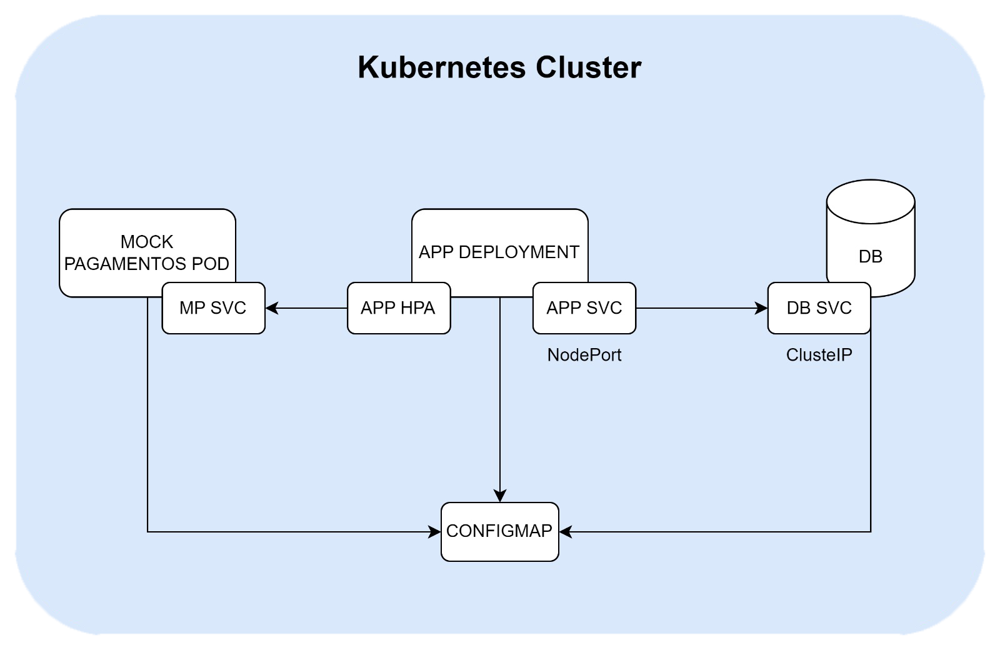

O diagrama abaixo ilustra a arquitetura projetada para nossa aplicação executar utilizando um cluster Kubernetes:

Diagrama da Arquitetura Kubernetes
Podemos sintetizar os seguintes requisitos de negócio contemplados pela arquitetura:
1. Disponibilidade e Escalabilidade: A utilização de Deployments e Services, juntamente com o Horizontal Pod Autoscaler (HPA), garante que a aplicação esteja sempre disponível para os usuários. O HPA permite que a aplicação escale automaticamente com base na demanda, atendendo a picos de tráfego sem intervenção manual.
2. Gerenciamento de Configuração: O uso de ConfigMaps para armazenar configurações externas, como informações de conexão ao banco de dados e URLs de serviços, permite uma gestão centralizada e flexível das configurações. Isso facilita ajustes e atualizações sem a necessidade de reconstruir ou reiniciar os containers.
3. Isolamento e Segurança: A separação do banco de dados e do serviço mock de pagamentos em Pods distintos, juntamente com a comunicação através de Services, promove o isolamento entre os componentes da aplicação. Isso melhora a segurança, limitando o acesso apenas aos recursos necessários para cada componente.
4. Integração e Testes: A implementação de um serviço mock de pagamentos permite a simulação de interações com sistemas de pagamento externos, facilitando o desenvolvimento e os testes da integração de pagamentos na aplicação. Isso garante que a aplicação possa ser testada de forma abrangente em um ambiente controlado antes de ser conectada a serviços de pagamento reais.
5. Monitoramento e Saúde da Aplicação: A inclusão de liveness e readiness probes nos manifestos tem como objetivo o monitoramento e preocupação com a saúde da aplicação. Essas probes ajudam a garantir que o Kubernetes possa gerenciar automaticamente a saúde dos Pods, reiniciando-os se eles não estiverem respondendo adequadamente.
6. Eficiência de Recursos: A especificação de recursos mínimos necessários para os containers, como CPU, no manifesto do Deployment, assegura que a aplicação utilize os recursos do cluster de forma eficiente, evitando o uso excessivo e permitindo uma melhor distribuição dos recursos disponíveis no cluster.
Esses requisitos refletem uma arquitetura projetada para ser resiliente, segura, e fácil de gerenciar e escalar, atendendo às necessidades de uma aplicação moderna em um ambiente de cloud como o Kubernetes.
Tutorial para Execução da Aplicação com Kubernetes¶
1. Aplicar o ConfigMap
O ConfigMap contém configurações essenciais para a aplicação e o banco de dados.
kubectlapply-fconfigmap.yaml
2. Inicializar o Serviço do Banco de Dados
Cria o serviço que permite a comunicação com o banco de dados PostgreSQL.
kubectlapply-fdb-svc.yaml
3. Inicializar o Pod do Banco de Dados
Cria o Pod que executa o container do PostgreSQL.
kubectlapply-fdb-postgres.yaml
4. Verificar as Migrations do Banco de Dados
Útil para assegurar que o banco de dados foi inicializado corretamente.
kubectllogsdb-pod
5. Inicializar o Metrics Server
Necessário para o funcionamento do Horizontal Pod Autoscaler (HPA).
kubectlapply-fapp-metrics.yaml
6. Inicializar o Serviço da Aplicação
Cria o serviço que expõe a aplicação.
kubectlapply-fapp-svc.yaml
7. Aplicar o Horizontal Pod Autoscaler
Configura o HPA para escalabilidade automática da aplicação.
kubectlapply-fapp-hpa.yaml
8. Inicializar o Deployment da Aplicação
Cria o Deployment que gerencia os Pods da aplicação.
kubectlapply-fapp-deployment.yaml
9. Verificar se a Aplicação Iniciou Corretamente
Lista os Pods para encontrar o nome do Pod da aplicação e verificar os logs.
kubectlgetpods
# Substitua `<nome_pod>` pelo nome do Pod da aplicação obtido no passo anterior.
kubectllogs<nome_pod>
10. Inicializar o Serviço Mock de Pagamentos
Cria o serviço que expõe o mock de pagamentos.
kubectlapply-fmock-pagamento-svc.yaml
11. Inicializar o Pod do Mock de Pagamentos
Cria o Pod que executa o mock de pagamentos.
kubectlapply-fmock-pagamento-pod.yaml
12. Verificar se o Mock de Pagamentos Subiu Corretamente
kubectllogsmock-pagamentos-pod
13. Desligar a Infraestrutura
Quando terminar, remova todos os recursos criados. Este comando remove todos os recursos dos tipos especificados no namespace atual
Esta seção fornece uma visão geral dos endpoints disponíveis para o serviço de autoatendimento em construção. Para testar os endpoints interativamente, utilize nossa Swagger UI disponibilizada ao fazer o build da aplicação.
Utilizando a collection no Postman
Disponibilizamos aqui uma collection no Postman para facilitar as interações com os endpoints da aplicação. Estão listados diversos cenários de uso e para utilizá-los basta importar a collection alterar os parâmetros das requisições diretamente no Postman.
A primeira etapa é a obtenção de um bearer token de acesso através da realização do login na aplicação. Para isso, basta utilizar o endpoint abaixo passando os devidos parâmetros no corpo da requisição:
/auth/login
Autentica o usuário e retorna um token de acesso.
Parâmetro
Tipo
Descrição
cpf
string
CPF do usuário.
senha
string
Senha do usuário.
Disponibilizamos um usuário administrativo padrão pré-cadastrado que poderá utilizar para autenticação na aplicação. Para isso, basta utilizar os seguintes parâmetros:
Esta seção detalha os endpoints disponíveis para gerenciamento de usuários na aplicação. Esses endpoints permitem criar, recuperar, atualizar e deletar informações de usuários.
/usuarios/
Recupera uma lista de todos os usuários cadastrados na aplicação.
/usuarios/
Cria um novo usuário com as informações fornecidas no corpo da requisição.
Parâmetro
Tipo
Descrição
nome
string
Nome do usuário.
email
string
Email do usuário.
senha
string
Senha do usuário.
cpf
string
CPF do usuário.
tipo
string
Tipo do usuário (Admin ou Cozinha).
status
string
Status do usuário (Ativo ou Inativo).
É necessário informar um CPF válido no formato 123.456.789-00;
/usuarios/{id}
Recupera os detalhes de um usuário específico pelo seu ID.
Parâmetro
Tipo
Descrição
id
integer
ID do usuário.
/usuarios/{id}
Atualiza as informações de um usuário específico pelo seu ID com os dados fornecidos no corpo da requisição.
Parâmetro
Tipo
Descrição
id
integer
ID do usuário.
/usuarios/{cpf}
Remove um usuário específico pelo seu CPF da aplicação.
Esta seção detalha os endpoints disponíveis para gerenciamento de clientes na aplicação. Esses endpoints permitem criar, recuperar informações de clientes.
/clientes/
Recupera uma lista de todos os clientes cadastrados na aplicação.
/clientes/
Cadastra um novo cliente com as informações fornecidas no corpo da requisição.
Parâmetro
Tipo
Descrição
nome
string
Nome do cliente.
email
string
Email do cliente.
cpf
string
CPF do cliente.
É necessário informar um CPF válido no formato 123.456.789-00;
/clientes/{cpf}
Recupera os detalhes de um cliente específico pelo seu CPF.
Esta seção detalha os endpoints disponíveis para gerenciamento de produtos na aplicação. Esses endpoints permitem criar, recuperar, atualizar e deletar informações de produtos.
/produtos/
Recupera uma lista de todos os produtos cadastrados na aplicação.
/produtos/
Cadastra um novo produto com as informações fornecidas no corpo da requisição.
Parâmetro
Tipo
Descrição
nome
string
Nome do produto.
foto
string
URL da foto do produto.
descricao
string
Descrição do produto.
categoria
string
Categoria do produto (Lanche, Bebida, Acompanhamento, Sobremesa).
preco
number
Preço do produto.
ingredientes
string[]
Lista de ingredientes do produto.
/produtos/{id}
Recupera os detalhes de um produto específico pelo seu ID.
Parâmetro
Tipo
Descrição
id
integer
ID do produto.
/produtos/{id}
Atualiza as informações de um produto específico pelo seu ID com os dados fornecidos no corpo da requisição.
Parâmetro
Tipo
Descrição
id
integer
ID do produto.
/produtos/{id}
Remove um produto específico pelo seu ID da aplicação.
Esta seção detalha os endpoints disponíveis para gerenciamento de pedidos na aplicação. Esses endpoints permitem criar, recuperar, atualizar o status de pedidos, associar clientes e produtos a pedidos, e registrar pagamentos.
/pedidos/
Recupera uma lista de todos os pedidos cadastrados na aplicação.
/pedidos/
Cria um novo pedido com as informações fornecidas no corpo da requisição.
/pedidos/novos
Recupera uma lista de pedidos recentemente criados que ainda não foram processados.
/pedidos/{id}/status/{status}
Atualiza o status de um pedido específico.
Parâmetro
Tipo
Descrição
id
integer
ID do pedido.
status
string
Novo status do pedido.
/pedidos/{id}/cliente/{cliente_id}
Associa um cliente a um pedido específico.
Parâmetro
Tipo
Descrição
id
integer
ID do pedido.
cliente_id
integer
ID do cliente a ser associado ao pedido.
/pedidos/{id}/produto/{categoria}/{produto_id}
Adiciona um produto a um pedido específico, categorizando o produto adicionado.